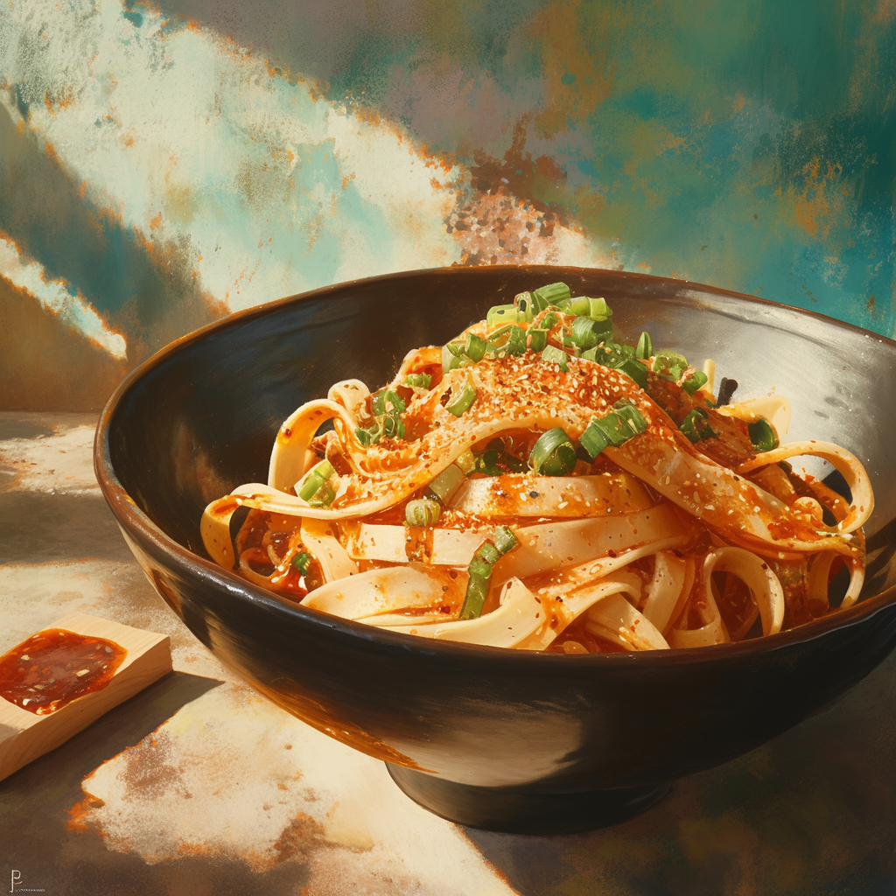

Home
Crispy Sesame Garlic Chili Oil Noodles

Description
Sharing an easy, weeknight, takeout-at-home-style dinner, Crispy Sesame Garlic Chili Oil Noodles. Homemade spicy chili oil with crispy garlic, shallots, and sesame seeds all tossed with quick-cooking rice noodles and fresh herbs. These noodles are saucy, just a little spicy, and the recipe comes together in no time at all (about 25-minutes). Perfect for busy weeknights when you’re looking for something with a little more flavor, but still quick, and delicious.
Ingredients
- 3/4 cup sesame or peanut oil
- 1 small head garlic, finely chopped
- 2 smaller shallots, thinly sliced
- 1 bay leaf
- 3 tablespoons sesame seeds
- 3 teaspoons ginger, grated
- 1-3 tablespoons crushed red pepper flakes, to taste
- 1 tablespoon Korean chili flakes (Gochugaru) (optional)
- 1/2 teaspoon paprika
- 1/4-1/2 teaspoon cayenne pepper, to taste
- 8 ounces rice noodles
- 2 bell peppers, thinly sliced
- 1/3 cup tamari or soy sauce
- 1/3 cup chopped fresh cilantro
- 1/4 cup chopped fresh Thai or regular basil
- 1/4 cup chopped fresh green onions
Steps
- In a medium skillet, combine the sesame oil, garlic, shallots, and bay leaf. Cook over medium heat until the garlic turns golden and is crisping, about 5-8 minutes. Stir in the sesame seeds and ginger, cook 1 minute.
- Pour the oil into a large bowl. Add the chili flakes, paprika, cayenne, and season with salt. I use all of the oil for the noodles, but if desired, reserve half of the oil for serving.
- Cook the noodles according to package directions. During the last 3 minutes, add the bell peppers to the water. Save 1/4 cup water, then drain. Toss the hot noodles, tamari/soy sauce, and all of the herbs with the chili oil, add water to thin to reach desired consistency.
- Serve the noodles with additional chili oil and green onions.